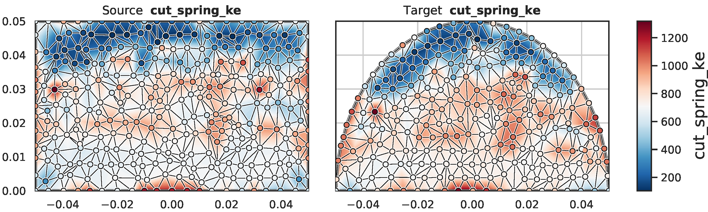
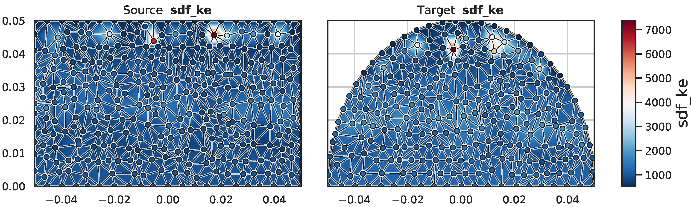
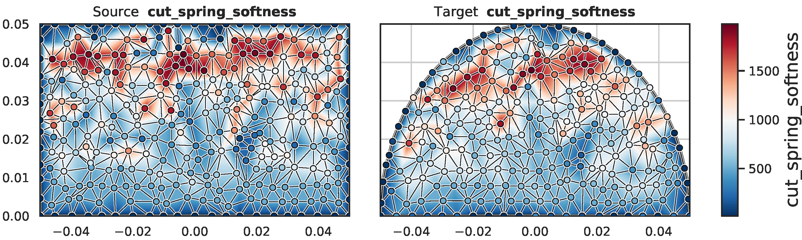
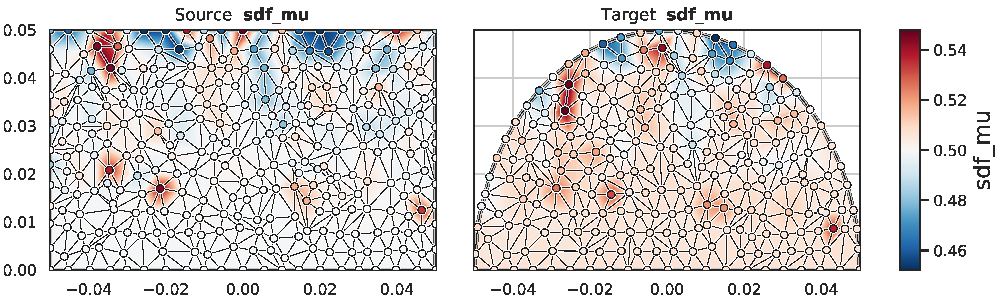
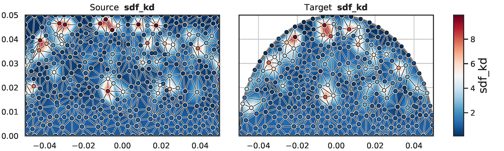
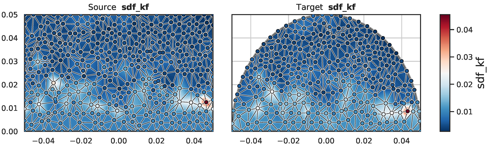

1University of Southern California
2NVIDIA
3University of Washington
4University of Toronto &
Vector Institute
5University of Sydney
Robotic cutting of soft materials is critical for applications such as food processing, household automation, and surgical manipulation. As in other areas of robotics, simulators can facilitate controller verification, policy learning, and dataset generation. Moreover, differentiable simulators can enable gradient-based optimization, which is invaluable for calibrating simulation parameters and optimizing controllers. In this work, we present DiSECt - the first differentiable simulator for cutting soft materials. The simulator augments the finite element method (FEM) with a continuous contact model based on signed distance fields (SDF), as well as a continuous damage model that inserts springs on opposite sides of the cutting plane and allows them to weaken until zero stiffness to model crack formation. Through various experiments, we evaluate the performance of the simulator. We first show that the simulator can be calibrated to match resultant forces and deformation fields from a state-of-the-art commercial solver and real-world cutting datasets, with generality across cutting velocities and object instances. We then show that Bayesian inference can be performed efficiently by leveraging the differentiability of the simulator, estimating posteriors over hundreds of parameters in a fraction of the time of black-box methods. Finally, we illustrate that control parameters in the simulation can be optimized to minimize cutting forces via lateral slicing motions.
Knife force simulation of cutting a potato. DiSECt allows the efficient calibration of simulation parameters to match actual force measurements from a real robot cutting biomaterials.
Deformable objects are simulated via the Finite Element Method (FEM). To simulate crack propagation and damage, we insert springs (shown in cyan) between the cut elements of the mesh which are weakened as the knife exerts contact forces.
Evolution of the knife force profile while the simulation parameters are calibrated via gradient-based optimization. The ground-truth trajectory has been obtained from a real force sensor attached to a robot cutting a real apple.
We use Optimal Transport to transfer optimized cutting spring parameters between different meshes of the same material. In this example, the parameters are transferred from a prism mesh to a half-cylinder mesh with potato material properties. Groundtruth knife forces stem from a state-of-the-art commercial simulator.
Knife force profile of the transported cutting spring parameters (orange) against the ground-truth knife force profile (black) from a commercial simulator on a half-cylinder mesh with potato material properties.
Cost matrix (pair-wise squared distances) between 2D spring coordinates from the source mesh (prism) and the target mesh (cylinder).
Correspondences between source and target cutting spring coordinates found by Optimal Transport using the Earth Mover's Distance metric.
Cutting spring stiffness
Contact normal force stiffness
Cutting spring softness
Contact friction coefficient
Contact damping coefficient
Contact friction stiffness
We leverage the end-to-end differentiability of our simulator to optimze a control cost function to find fast, energy-efficient cutting trajectories. By employing hard constraints on the lateral knife motion, a sawing movement emerges:
Initial trajectory (before optimization)
Unconstrained optimization
Constrained optimization
We thank Yan-Bin Jia and Prajjwal Jamdagni for kindly providing us a dataset of real-world cutting trajectories which we used throughout our experiments. Be sure to also check out their research on robotic cutting!
Part of the research was supported by a Google Ph.D. Fellowship.
In our ongoing work, we are applying DiSECt to real-robot cutting.
We plan to release our source code soon, stay tuned!